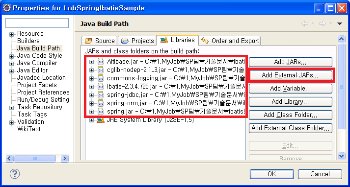

Spring에서 ALTIBASE에 연동할 경우 고려해야 할 사항에 대해 설명한다.
LOB 데이터 처리
iBATIS에서 LOB을 처리하기 위해서는 SqlMap 파일에 parameter와 result에 대한 정보를 setting하는 부분에 반드시 jdbcType을 CLOB/BLOB이라고 명시를 해줘야 한다. 그렇지 않을 경우에 길이제한에 의해 올바르지 않은 데이터를 입력하거나 잘못된 데이터를 질의할 수 있다. 혹은 Invalid length등의 에러가 발생할 수도 있다. 따라서 반드시 parameter와 result에 대한 mapping을 CLOB/BLOB으로 지정해줘야 한다.
다음은 CLOB 타입의 데이터에 대한 parameterMap과 resultMap을 지정하여 setting하고 있는 예제이다.
예) LobSample의 LobSample.xml(SqlMap) 파일
<sqlMap namespace="LobSample">
<resultMap id="LobSampleResult" class="com.altibase.lob.LobSample">
<result property="lob_id" column="lob_id" />
<result property="lobcolumn" column="lobcolumn"
jdbcType="CLOB" javaType="java.lang.String" />
</resultMap>
<parameterMap id="LobSampleParam" class="com.altibase.lob.LobSample">
<parameter property="lob_id" />
<parameter property="lobcolumn"
jdbcType="CLOB" javaType="java.lang.String" />
</parameterMap>
<select id="getLobSample" parameterClass="int" resultMap="LobSampleResult">
SELECT lob_id, lobcolumn
FROM lobsample
WHERE lob_id = #value#
</select>
<insert id="insertLobSample" parameterMap="LobSampleParam">
INSERT INTO lobsample (lob_id,lobcolumn)
VALUES (?,?)
</insert>
…
</sqlMap>
또한 LOB 처리 시 반드시 주의해야 할 사항은 ALTIBASE에서 LOB 데이터를 처리하기 위해서는 반드시 autocommit 모드를 false로 바꾼 후 트랜잭션을 관리해줘야 한다는 것이다. iBATIS 연동 시 SqlMapConfig 파일의 <transactionManager>에 dataSource를 설정할 경우에는 내부적으로 setAutoCommit(false); 메소드를 호출하여 autocommit 모드를 false로 바꿔주기 때문에 LOB 처리 시 따로 고려할 사항은 없다. 하지만, iBATIS와 Spring을 함께 연동할 경우 Spring에서 트랜잭션을 관리해준다면 LOB을 처리하기 위해서는 반드시 TransactionManager bean을 명시해줘야 한다.
또, Spring에서 선언적으로 트랜잭션을 처리하는 경우에는 propagation을 PROPAGATION_REQUIRED, PROPAGATION_REQUIRES_NEW, PROPAGATION_NESTED 중 하나로 지정해줘야 한다.
만약 TransactionManager를 지정해주지 않았거나, 또는 선언적 트랜잭션을 사용하는데 propagation을 위에 설명한 값 이외의 다른 값으로 지정했을 경우에는 LOB 데이터 조회 시 null 값이 리턴 되거나, “java.sql.SQLException: [DOCKI:0]:LobLocator can not span the transaction 101858625.” 과 같은 에러가 발생한다.
그리고 LOB 데이터를 입력 시에도 “java.sql.SQLException: [DOCKI:0]:LobLocator can not span the transaction 101858625.” 에러가 발생하게 된다.
다음의 예제는 Spring의 applicationContext.xml에서 선언적으로 트랜잭션을 처리하여 LOB 데이터를 처리하는 예제이다. 선언적으로 트랜잭션을 처리하는 방법에 대한 자세한 설명은 『ALTIBASE_Spring_연동가이드』문서를 참고하면 된다.
예) LobSpringIbatisSample의 applicationContext.xml 파일
…
<bean id="dataSource"
class="org.springframework.jdbc.datasource.DriverManagerDataSource">
<property name="driverClassName" value="Altibase.jdbc.driver.AltibaseDriver"/>
<property name="url" value="jdbc:Altibase://192.168.1.35:21129/mydb"/>
<property name="username" value="sys"/>
<property name="password" value="manager" />
</bean>
<bean id="sqlMapClient"
class="org.springframework.orm.ibatis.SqlMapClientFactoryBean">
<property name="dataSource" ref="dataSource"/>
<property name="configLocation" value="SqlMapConfigExample.xml"/>
</bean>
<bean id="transactionManager"
class="org.springframework.jdbc.datasource.DataSourceTransactionManager">
<property name="dataSource" ref="dataSource"/>
</bean>
<bean id="txProxyTemplate" abstract="true"
class="org.springframework.transaction.interceptor.TransactionProxyFactoryBean">
<property name="transactionManager" ref="transactionManager" />
<property name="transactionAttributes">
<props>
<prop key="insert*">PROPAGATION_REQUIRED</prop>
<prop key="update*">PROPAGATION_REQUIRED</prop>
<prop key="delete*">PROPAGATION_REQUIRED</prop>
<prop key="get*">PROPAGATION_REQUIRED</prop>
</props>
</property>
</bean>
<bean id="lobSampleDao" parent="txProxyTemplate">
<property name="target">
<bean class="com.altibase.lob.LobSampleDao">
<property name="sqlMapClient" ref="sqlMapClient"/>
</bean>
</property>
</bean>
…
위의 LobSpringIbatisSample 프로젝트를 실행하기 위해서는 Altibase.jar, ibatis-2.3.4.x.jar 파일과 spring-jdbc.jar, spring-orm.jar, spring.jar, commons-logging.jar, cglib-nodep-x.x.jar 파일이 필요하다.

{kind=link}